Most recent recipes
Sweet and savoury chicken pie with cinnamon almonds
2 hr 5 mins
Serves 4
Pulled jerk BBQ sliders
1 hr 5 mins
Serves 3
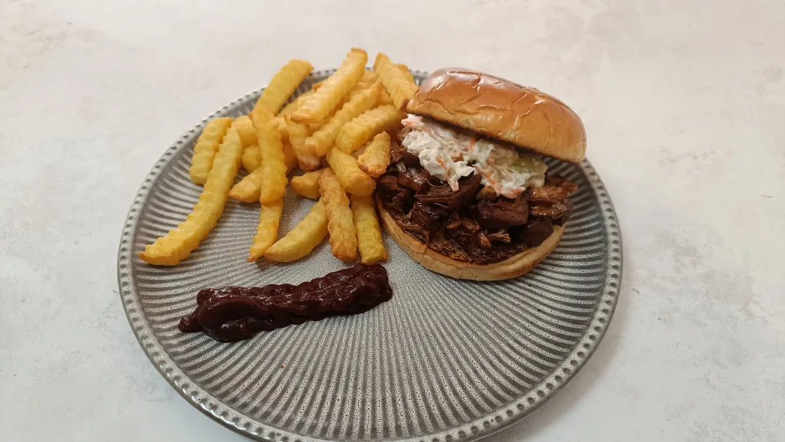
Bò Kho-style steak and lemongrass pie
3 hr 20 mins
Serves 6
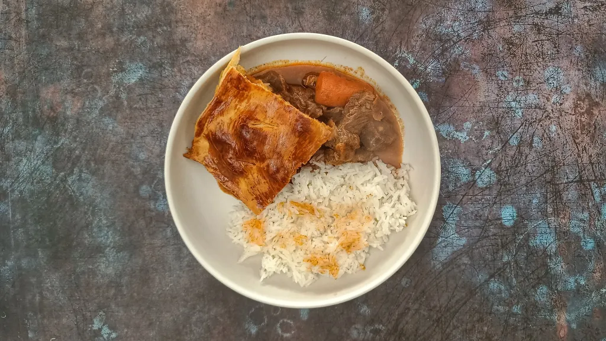
Green Thai salmon parcels
22 mins
Serves 2
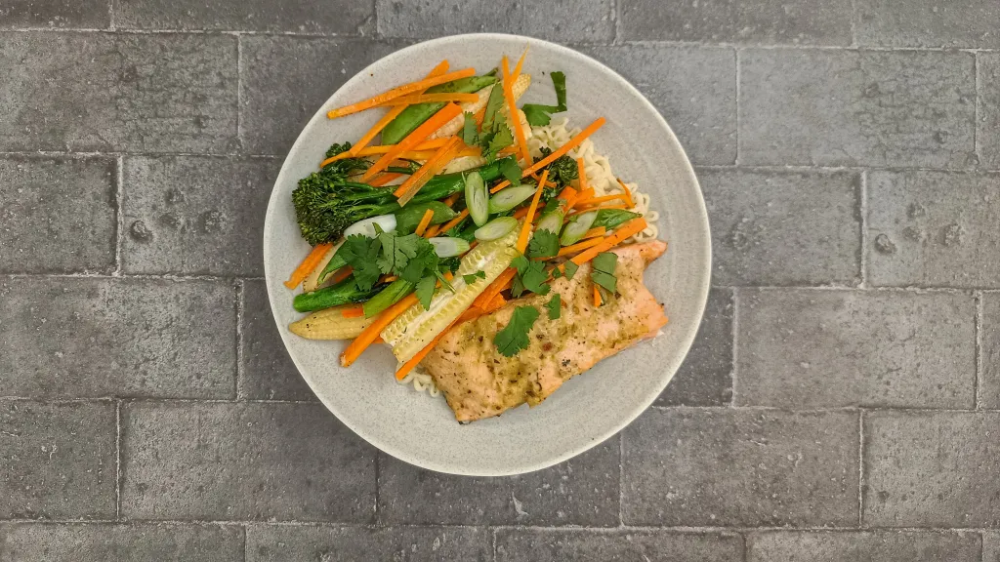
Sicilian-style sausages and peppers with herby polenta
30 mins
Serves 2
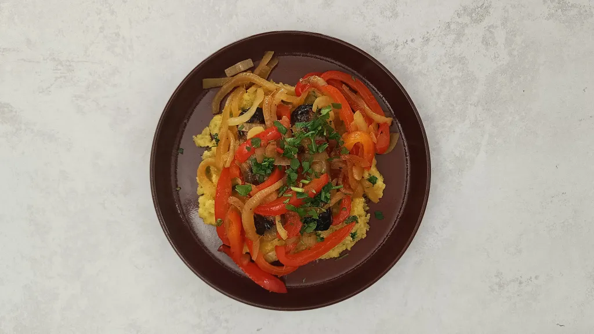
Chicken shawarma
40 mins
Serves 6
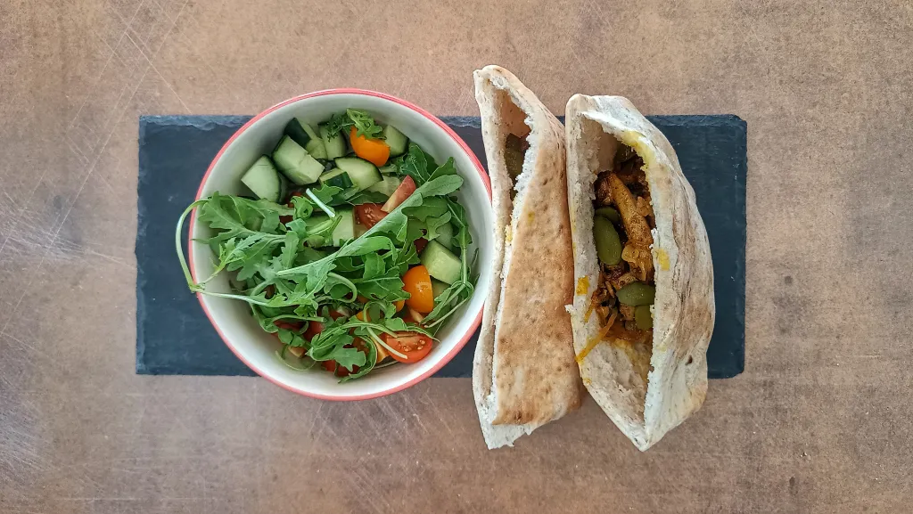
Grilled merguez sandwiches with caramelized onions, manchego, and harissa mayonnaise
25 mins
Serves 4
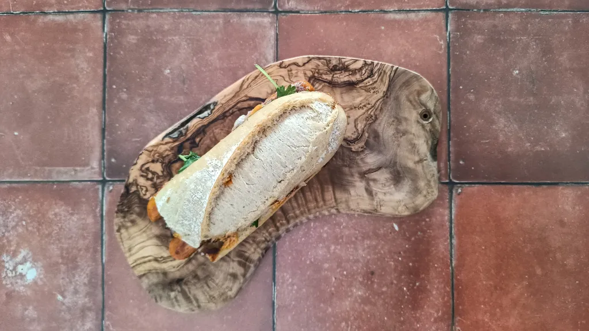
Turmeric and chilli honey cod nuggets
35 mins
Serves 2
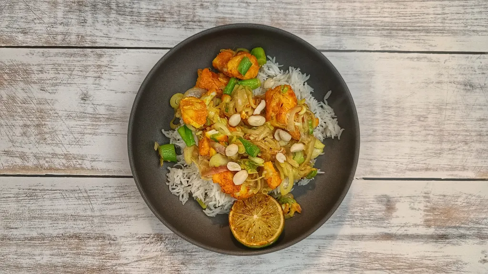
Bonfire night maple bacon ‘baked’ beans
8 hr 25 mins
Serves 6
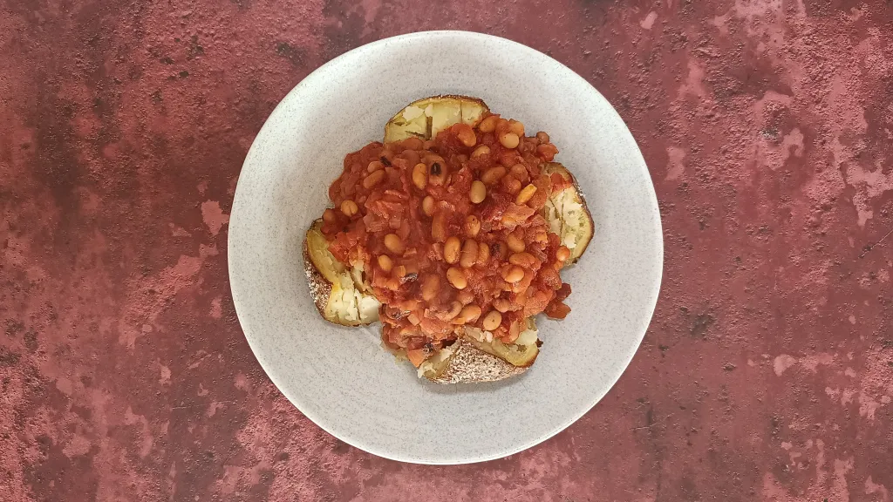
Stir-fried chicken and ginger (gai pad king)
25 mins
Serves 2
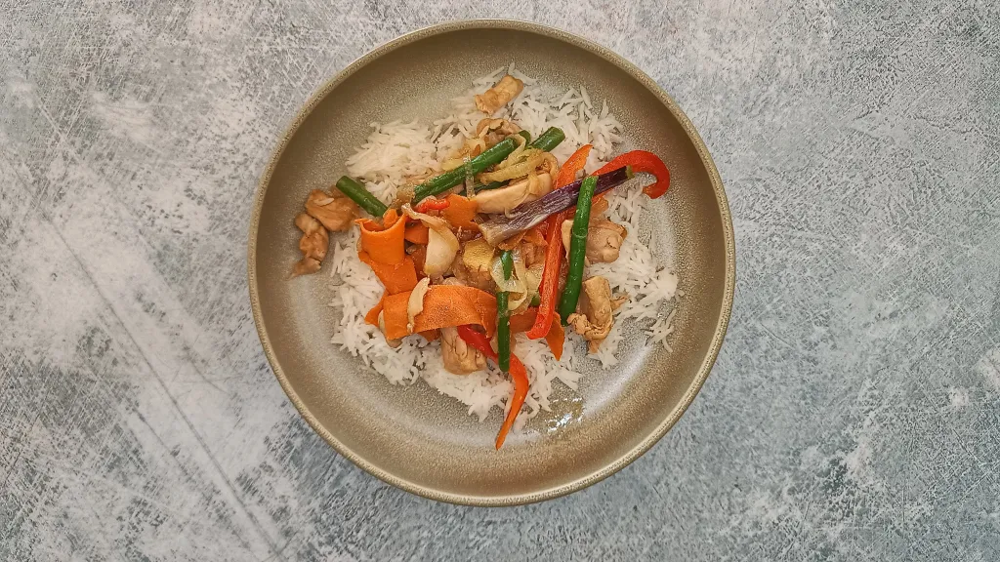
Yasai gyoza ramen
35 mins
Serves 2
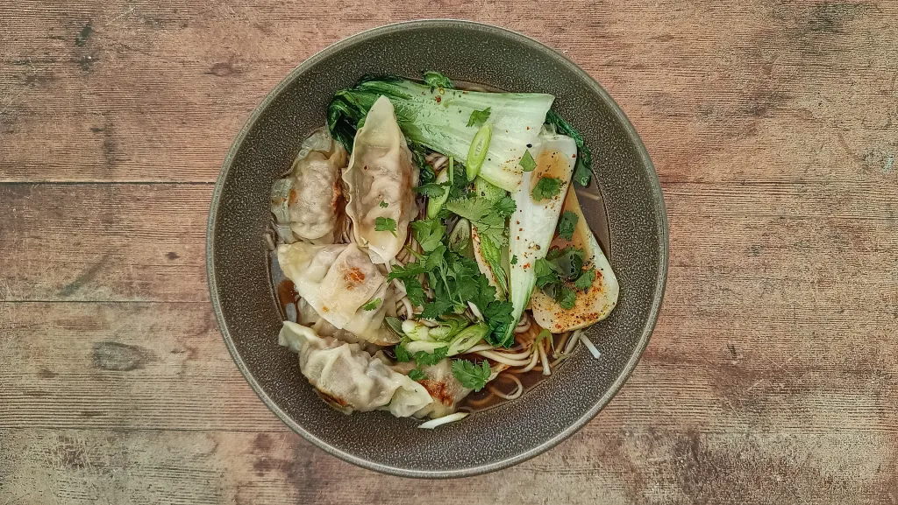
Corn ribs
35 mins
Serves 4
Zucchini noodle bowl with walnut-kale pesto
15 mins
Serves 2
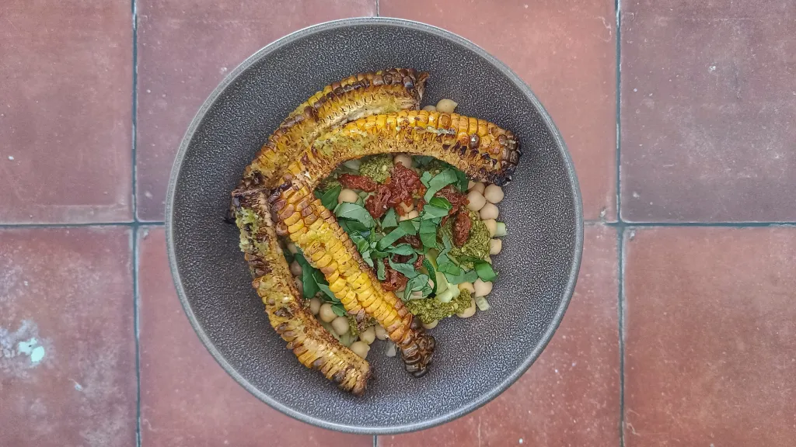
Homemade sausage and egg mcmuffin
25 mins
Serves 4
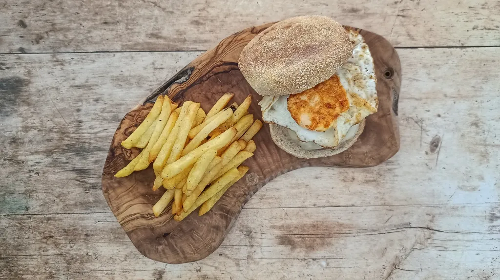
Pulled lamb shawarma sandwich
6 hr
Serves 8
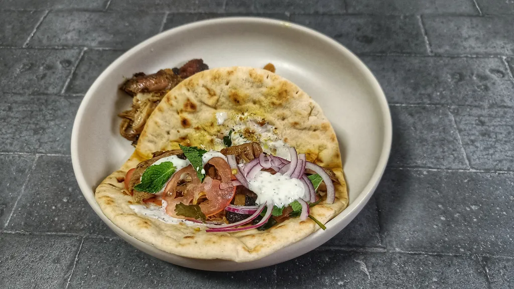